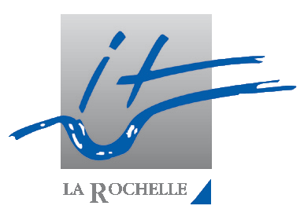
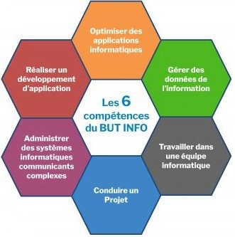
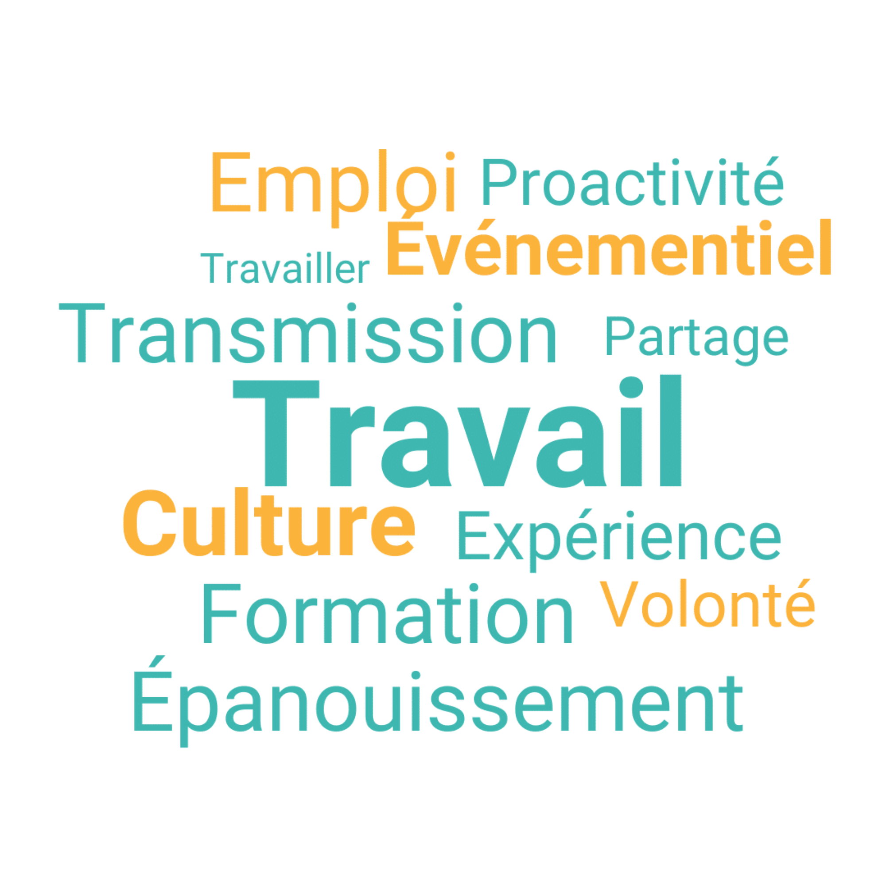

Avis de l'ancien élève sur l'option NSI
Il trouve l'option NSI est une option d'avenir car de nombreux métier se modernise et se créer comme la sécurité informatique et le développement de industriel et cela lui a permis d'accèdé au BUT qu'il recherchais.

Présentation de l'université ?
Suite a l'obtention de son baccalauréat notre Intervenant suivis un cursus post-BAC en allant faire un BUT Réseaux & Télécommunications Parcours Cybersécurité à la Rochelle. Bien-sûr l'université ne possède pas uniquement ce cursus elle possède :
- BUT Techniques de Commercialisation dans tout les domaines possible en fonction du choix fait ;
- BUT génie civil dans différents domaines ;
- BUT génie biologique dans plusieurs domaines;
- BUT informatique ce spécialisant plus dans la conception;
- Il existe bien sûr d'autre formation sur l'université: Pour plus d'information : le site de l'université

Les cours au BUT
Au BUT tout est pris en compte lors des notes mise en fin de semestre et appréciation:contrôle continue, assiduité et les partiels .Les cours se divise en plusieurs partie
Les cours magistraux en amphitheâtre avec toutes les promotions lors des cours en tronc commun;
Des travaux dirigé séparent la classe en 2;
Des travaux Pratique séparent la classe en 3 utilisant des outils spécifique tels que Virtual box afin de simulé des réseaux informatique;
8 semaine de stage en entreprise a partir de la 2ème année et 16 semaine en 3ème année ;
De plus L'université fait passé des certification aux élèves de la formation comme : SISCO ou STORMSHIELD
Les professeur son pour certain des chercheurs (BAC + 8) ce qui montrent que ce sont des personnels compétant il seront franc avec les étudiants.

Quelles sont les possibilité suite au BUT ?
Suite au BUT il y plusieurs possibilité tel que continuer les études pour continuer sur un Master (BAC+5) ou bien ce mettre sur le marché de l'emploie avec plusieurs possibilité de carrière dans le domaine de l'informatique ou bien autre domaine en fonction du cursus choisi
